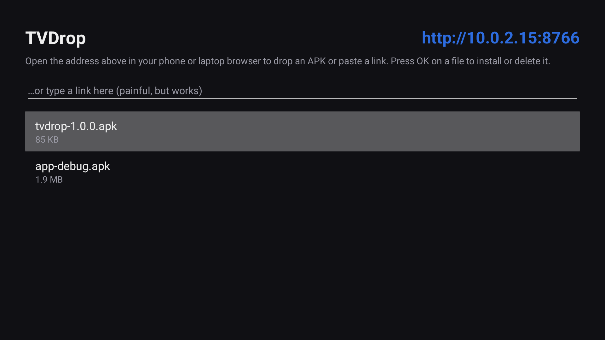
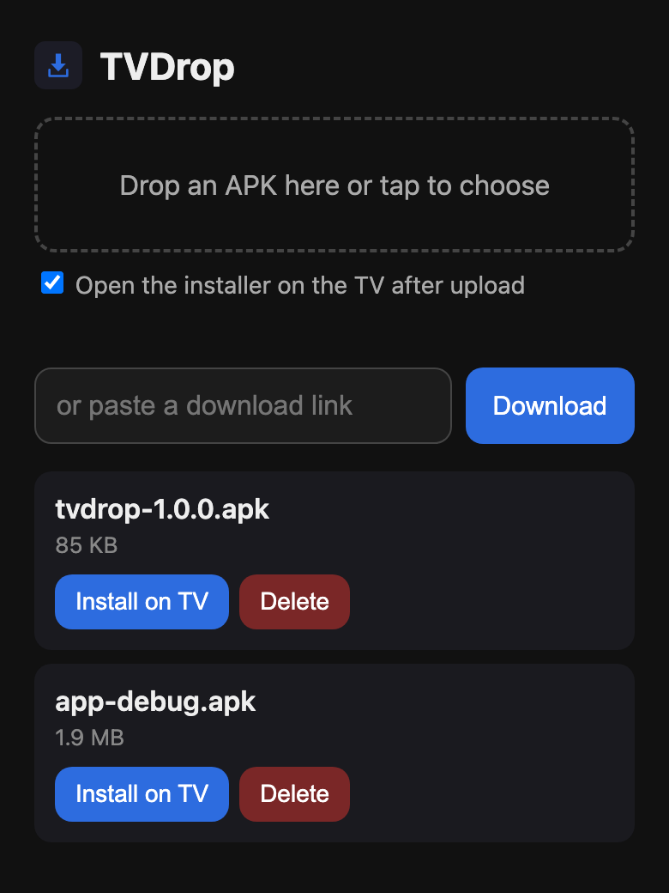
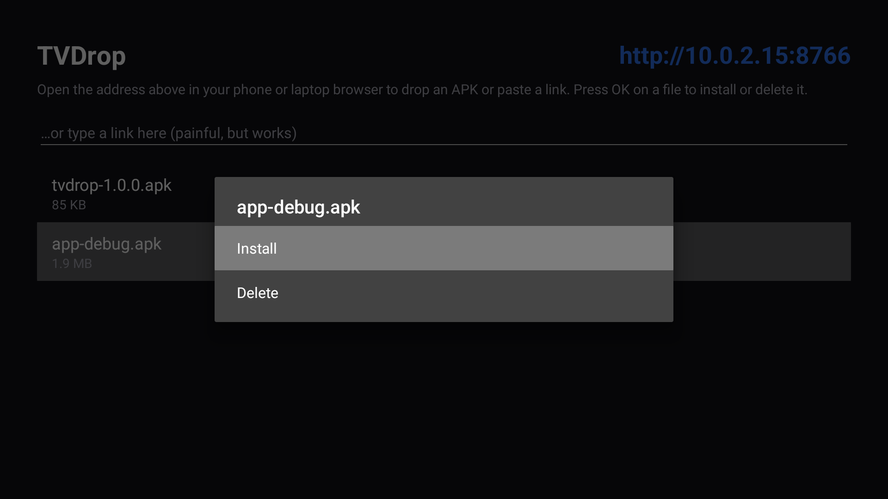
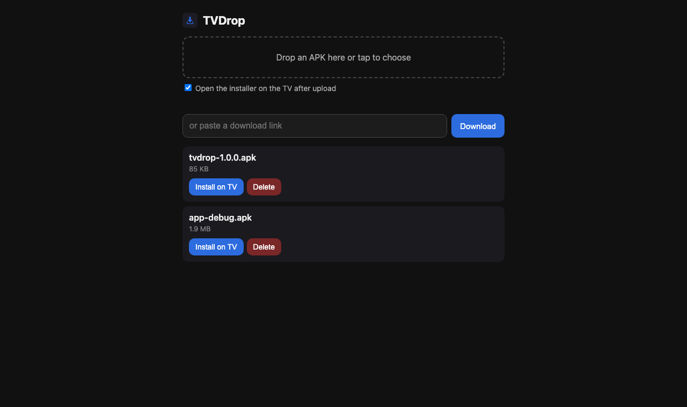

TVDrop runs a tiny web page on your Android TV. Open it on your phone or laptop, drop an APK or paste a download link, and the TV installs it. No adb, no USB stick, no typing long URLs with a remote.
Free and open source · Android 7.0+ · ~90 KB · No accounts, no tracking, no internet needed


The app shows an address like http://192.168.1.20:8766. Anything on the same Wi-Fi can open it.
Drag an APK onto the page, or tap to pick one on your phone. It goes straight to the TV and the installer opens.
Give it a download URL and the TV fetches the file itself. Redirects and GitHub release links work.
After a successful install TVDrop offers to delete the APK: Delete, Keep, or Always delete.
Everything also works from the TV: press OK on a file to install, open or delete it.
Send any file. Non-APK files open in whatever app on the TV handles them.
No cloud, no account, no third-party libraries. The server only runs on your network while the app is alive.
Captured on an Android TV 13 emulator and a desktop browser.


You only need to get TVDrop onto the TV once. After that every app, including TVDrop updates, goes through TVDrop.
Install Downloader by AFTVnews from the TV's app store. Open it and enter:
ashutosh091.github.io/TVDropPress Download APK on this page, then Install.
Turn on Developer options → USB / network debugging on the TV, then:
adb connect <tv-ip>:5555
adb install tvdrop.apkCopy tvdrop.apk to a USB drive, plug it into the TV and open it with any file manager app on the TV.
http://192.168.1.20:8766.Anything running Android 7.0 or newer: Android TV and Google TV boxes and TVs (Chromecast with Google TV, Nvidia Shield, Xiaomi Mi Box, Sony, TCL, Philips and others). It is developed and tested on the Android TV emulator. Fire TV runs Android underneath and should work too, but it is untested. It also runs on phones and tablets.
The page is only reachable from your local network while TVDrop is running. Anyone on the same Wi-Fi can send files to it, but nothing is installed without you pressing Install on the TV. The server rejects requests from other websites and from DNS rebinding tricks, and file names are confined to TVDrop's own folder. Avoid leaving it open on untrusted networks.
Check that the phone is on the same network as the TV, not mobile data or a guest Wi-Fi. Keep TVDrop open on the TV. Some routers isolate wireless clients; turn off "AP isolation" or "client isolation" if that is on.
In TVDrop's own app folder on the TV. Uninstalling TVDrop removes them. Use Delete in the app or on the page to free space.
No. It only uses the standard "install unknown apps" permission, which Android asks you to grant once.